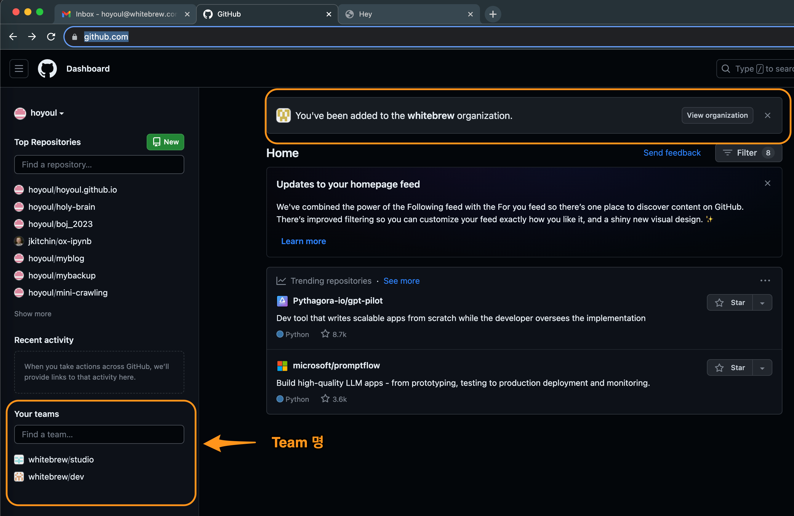
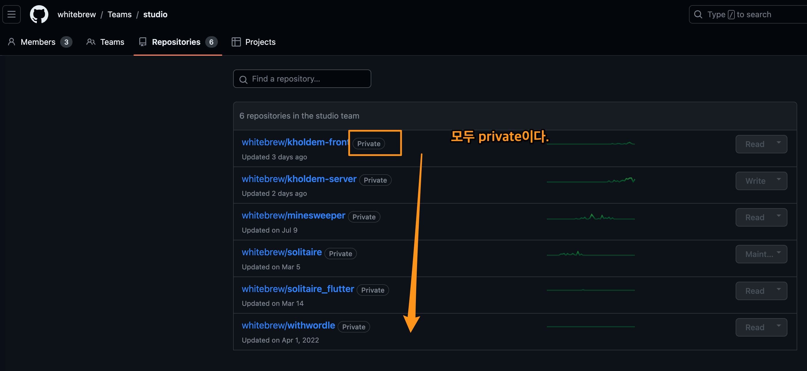
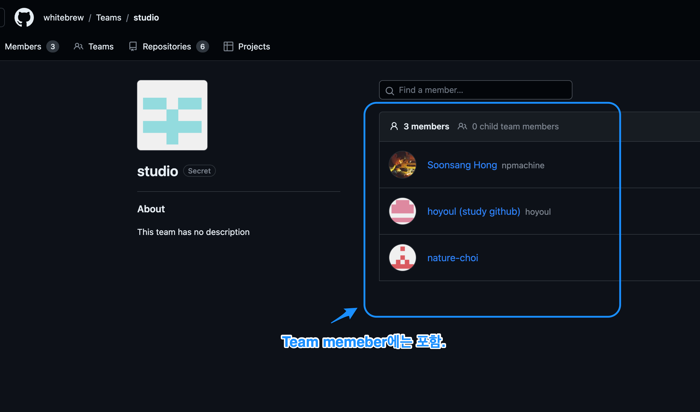
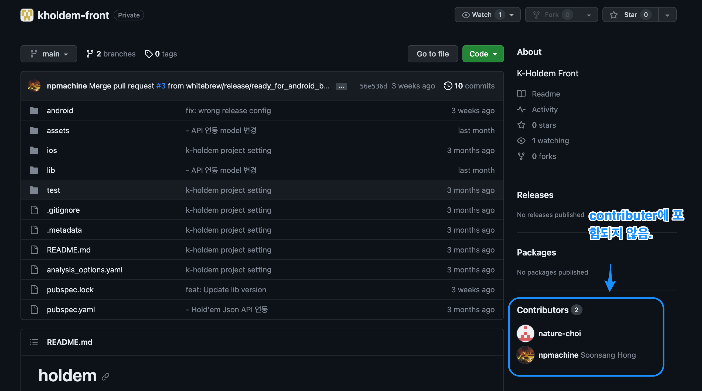

Created: 2023-10-11 Wed 11:06
나는 지금 whitebrew 개발팀에 합류했고, github으로 협업하게 되었다. 팀에서는 협업을 위해서 내 github email주소를 요청했다. 그리고 team에서는 내 email로 협업자로 등록을 해주었다. email만 전달했는데, team에서 등록했다고 연락이 왔다. 그리고 github에 보면 다음과 같이 team들이 보였다.

Figure 1: team1
그런데, 해당 team의 link로 들어가서 여러 repo들을 다운 받을려고 보니, 왠걸 다운이 안되는 것이다. clone이 안 된다. 인증 문제가 있었다. 해당 repo들이 private으로 설정되어서 그런 것인가?

Figure 2: promblem 0
그런데, team member로 들어가면 private이던 public이던 상관없이 clone이 된다고 한다. 그럼 이문제는 아니다. 좀 더team의 repo들을 살펴보기로 했다.
team page에 가보니까, 다음과 같이 되어 있었다. team member이지만, contributer가 아니라서?

Figure 3: team2

Figure 4: team3
그런데, team contributer는 team repo에 commit할 권한만 주어진다. local로 clone하고 write하고 commit하는것과는 관련이 없다. 정상적이라면, commit이 되어야 한다. 즉, 이 문제는 아니다.
나한테 문제가 있는 건 아닐까? 나는 multiple github을 사용하고 있다. github계정이 여러개이기 때문이다. 그래서 push나 clone할때 일반적으로 repo의 주소를 그대로 clone하거나 push하지 않는다. postfix를 붙여서 처리하는데, 그것은 약간 tricky하다.